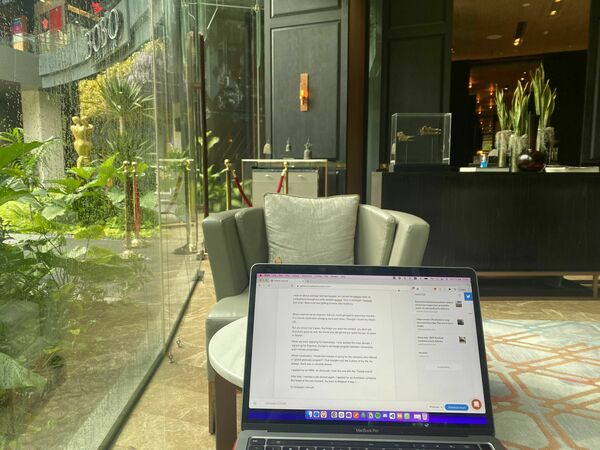

Newsletter #3
This newsletter was originally published on the Revue platform, which Twitter (now X) killed after being taken over by Elon Musk. I now republish it here. My latest newsletters are on Convertkit.
I live in Bangkok. Last week my spouse and I started planning for our next destination. Probably something in Africa or South America.
When I was 12, I didn’t expect this life.
The itch was there, I always wanted variety, something new.
I wanted to change schools because I was bored (I didn’t eventually).
I went to study at 3 different universities because I was bored.
I wanted to change jobs every time routine kicked in, typically after 6 months.
What I didn’t realize was that I can live the lifestyle of variation.
I was told:
Get a job, buy a house, get a promotion, get children, …
Today that just isn’t true anymore.
Software development requires you to have nothing more than a laptop. English is the lingua franca for many jobs around the world. And remote work allows you to work from everywhere. Time zone permitting.
So we chose to live in Bangkok a few years back.
With a little baby Iza now, we want a quieter environment for our little one. And we believe we can find a great environment for our child(ren) to grow up.
A famous rapper used to sing: If I can see it, then I can do it, if I just believe it, there’s nothing to it.
The world is at your feet. Go conquer it.
With that, I wish you a great week from the Lobby Lounge from the Hyatt Sukhumvit Soi 13!
PS our baby Iza slept through her first full night since being born 3.5 months ago! So I’m super chilled out today.
